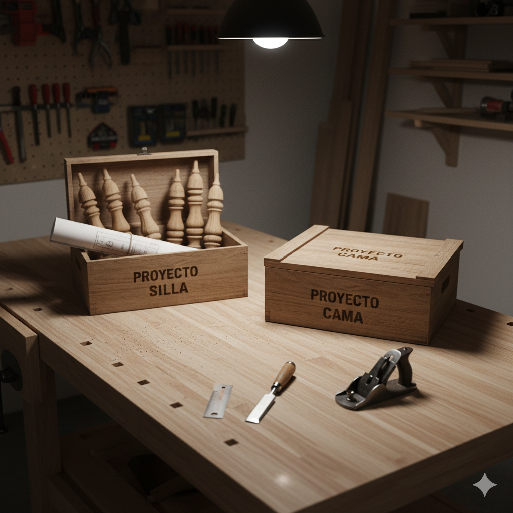

3 Flujo de trabajo orientado a proyectos
Este capítulo se basa en (Bryan et al., 2025, Capítulos 3, 5) y tiene como propósito … Exploraremos los siguientes aspectos:
- ¿Qué significa organizar tu trabajo por proyectos?
3.1 Organizar tu trabajo por proyectos
Imagina que eres un carpintero profesional y quieres construir una silla y una cama. Tienes 2 formas de trabajar (Ver Figura 3.1):
1. El taller del caos
Trabajas con ambos proyectos mezclados sobre la misma mesa de trabajo. Las piezas de la silla están amontonadas sobre las de la cama y los tornillos están revueltos. Para avanzar en la silla, primero debes apartar lo que te estorba de la cama. Si decides mudarte de taller, tienes que identificar y recoger cada pieza una por una, con el riesgo de olvidar algo o llevarte una parte que no corresponde.
2. El taller por proyectos
Utilizas una caja independiente para cada mueble. Sobre la mesa de trabajo solo pones la caja de la silla o la de la cama, según lo que necesites. Cada caja contiene únicamente las piezas y los planos de ese proyecto. Si decides trabajar en la silla, la mesa queda libre de cualquier parte de la cama. Si tienes que mudarte de taller, simplemente cierras la caja y te la llevas: cada proyecto es autónomo, listo para continuar en cualquier otro lugar.

Cuando utilices R con Positron para realizar un análisis de datos, es importante adoptar un flujo de trabajo orientado a proyectos. Esto significa:
Establecer un orden y estructura: consiste en que coloques todos los archivos relacionados con un mismo proyecto en una carpeta específica. Si el proyecto crece en complejidad, utiliza subcarpetas para mantener la claridad. Asimismo, adopta un sistema coherente para nombrar tanto tus carpetas como los archivos.
Saber dónde estás parado: Al trabajar en un proyecto, Positron debe estar situado exactamente en la carpeta específica del proyecto. Esto se conoce como directorio de trabajo. Si Positron intenta buscar tus archivos en el lugar equivocado, no podrá abrirlos. Lo ideal es que Positron se sitúe en la carpeta correcta al abrir tu proyecto.
Adoptar una disciplina de rutas: todas las rutas de tus archivos deben ser en lo posible relativas. Esto significa que, como ya sabes dónde estás parado, solo necesitas indicar el camino desde la carpeta del proyecto hacia el archivo que quieres usar. De esta forma, evitas escribir rutas largas y fijas que solo funcionan en tu computador.
Estas prácticas permiten que el proyecto sea portátil y comprensible. Al implementarlas, podrás mover la carpeta del proyecto de un lugar a otro en tu computador, e incluso enviarla a otras personas y que el proyecto simplemente “funcione” (Bryan, 2017). Además, permites que otra persona pueda explorar el proyecto y entender la estructura de tu trabajo.
En la Sección 3.2 abordaremos de manera práctica en Positron como se materializan los aspectos mencionados en ésta sección. Si algunos elementos no se entienden a profundidad con la generación de un proyecto de R en Positron quedarán más claros estos aspectos.
3.2 Flujo de trabajo por proyectos en Positron para R
En Positron, un proyecto es un conjunto de archivos que se encuentran en una carpeta específica así como un conjunto de configuraciones que se aplican por defecto para realizar una tarea determinada. Al abrir esta carpeta, Positron asume automáticamente que todo lo que necesitas buscar o guardar se encuentra dentro de ella. Organizar tu trabajo de esta manera permite la reproducibilidad, eficiencia, automatización y colaboración con otras personas.
Para generar un proyecto de R en Positron, utiliza la combinación de teclas Ctrl+Shift+PCtrl+Shift+P para desplegar la paleta de comandos y escribe: Workspaces: New Folder from Template…. Luego, podrás presionar esta opción y elegir a continuación R project para realizar las configuraciones respectivas de tu proyecto.
Primero, deberás definir el nombre de la carpeta donde estará tu proyecto y la ubicación dentro de tu computador o equipo. En el caso del nombre, para que sigas el contenido del libro te recomendamos utilizar r-analisis-datos.
En la Sección 3.3 abarcaremos con más detalle la forma recomendada de nombrar archivos y carpetas adoptando un conjunto de principios, de modo que puedas mantener tu proyecto organizado.
Segundo, aunque es posible aplicar ajustes avanzados, te sugerimos mantener la configuración inicial lo más simple posible. Para el desarrollo de este libro, solo es necesario que selecciones la versión de R que utilizarás. Otras opciones como Initialize Git repository o Use renv to create a reproducible environment no las abarcaremos.
Si deseas profundizar en éstas opciones más adelante, cuando estes familiarizado con R y Positron, puedes consultar (Bryan, 2024) y la documentación oficial de renv
3.3 ¿Cómo nombrar archivos y carpetas?
Existen 3 principios para nombrar archivos y carpetas (Bryan et al., 2025, Capítulo 5):
Legible por máquinas: los nombres deben estar optimizados para el procesamiento automatizado, basándose en 2 pilares.
Compatibilidad con búsquedas y automatización: un nombre debe prescindir de espacios en blanco, signos de puntuación (p. ej.,
.,,,;,:) a excepción del punto que precede a la extensión de un archivo (p. ej.,.html,.pdf,.docx) y caractéres acentuados (p. ej.,á,ñ,ü) así como usar preferiblemente minúsculas.Facilidad de cómputo: es necesario utilizar de manera deliberada delimitadores como
_o-, facilitando que el sistema operativo o R fragmente el nombre y recupere datos automáticamente.
Legible por humanos: un nombre debe permitir deducir el contenido de un archivo o carpeta sin tener que abrirlo, basándose en 2 pilares.
Nombres con carga informativa: el nombre debe funcionar como un resumen del contenido mediante el uso de palabras claves.
Semántica del slug: este concepto proviene de las URLs semánticas, que reemplazan códigos ilegibles por palabras que explican la jerarquía y el tema de una página (p. ej.,
dominio.com/cursos/r-basicoen lugar dedominio.com/?id=123). Al aplicar esta lógica a tus archivos, transformas un nombre genérico en una ruta con significado (p. ej.,001_limpieza-datos.Ren lugar dedocumento_v1.Rdonde el primero comunica qué contiene y en qué etapa del proyecto se encuentra).
Compatible con el ordenamiento por defecto: un nombre debe permitir que aparezca en la secuencia lógica deseada de forma automática, basándose en 3 pilares.
Priorizar el uso de números al inicio: colocar un identificador numérico al comienzo del nombre garantiza que los archivos o carpetas se listen siguiendo una jerarquía del proyecto, en lugar de un orden alfabético aleatorio.
Utilizar el estándar ISO 8601 para fechas: si el nombre incluye fechas utilizar el formato AAAA-MM-DD (Año-Mes-Día).
Rellenar números con ceros a la izquierda: para mantener el orden se deben usar ceros (p. ej.,
000,001,002, … ,010, …) en lugar de números simples (0,1,2, … ,10, …). Sin los ceros iniciales, un sistema operativo situará el10inmediatamente después del1, rompiendo la secuencia lógica.